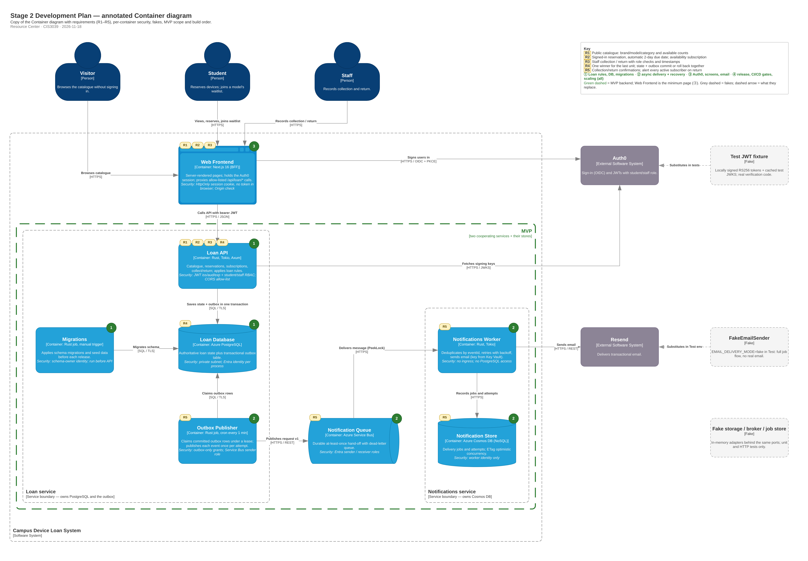

An architecture earns its weight only when its build sequence can survive the friction of time, cloud budgets, and external dependencies. Without an explicit line separating essential capability from deferred ambition, cloud-native projects fracture under premature complexity, accumulating half-wired services while core invariants remain unproven.
This Stage 2 plan distills the Campus Device Loan System into a verifiable January MVP. It binds every user journey (R1 to R5) to its owning container, orders the build so foundational data and concurrency guarantees precede interface polish, exposes external dependencies early, and defines the AI-accelerated engineering discipline that governs execution and auditability.
| ID | Journey and Architectural Guarantee | Primary Actor |
|---|---|---|
| R1 | Public Catalogue and Live Availability. Unauthenticated visitors browse device models by brand, model, and category with live available unit counts. | Visitor |
| R2 | Authenticated Reservation and Waitlist Subscription. Signed-in students reserve an available device, receiving an automatically assigned 2-day due date, or subscribe to a model waitlist when stock reaches zero. | Student |
| R3 | Staff Collection and Return with Backend RBAC. Authenticated staff record physical device collection and return with authoritative timestamps. Role enforcement resides in the Loan API, and unauthorized student requests terminate with deterministic 403 Forbidden. |
Staff |
| R4 | Concurrency-Safe Allocation and Atomic Outbox. Row-level PostgreSQL locking guarantees that exactly one student claims the final available unit under concurrent contention. Every loan state transition and its notification outbox row commit or roll back inside one database transaction. | System Invariant |
| R5 | Asynchronous Confirmations and Waitlist Fan-Out. Collection and return events trigger confirmation notices, and returning a device alerts every active subscriber on that model waitlist. Delivery executes asynchronously with deduplication by eventId, bounded retries, and dead-letter isolation. |
System Invariant |
EMAIL_DELIVERY_MODE=fake (FakeEmailSender) so the full job, attempt, retry, and deduplication lifecycle executes without external email noise. Live Resend delivery remains a bounded acceptance check subject to tutor confirmation.The MVP spans two cooperating backend services with isolated data stores, fronted by a Backend-for-Frontend (BFF) web application. Neither service reads or writes the other database, and Notifications never calls back into the Loan API to reconstruct ordinary requests.
| Stage 1 Container | Technology | MVP Scope and Requirements | Security Posture and Boundary | Step |
|---|---|---|---|---|
| Web Frontend | Next.js 16 (App Router, BFF) | In MVP (R1, R2, R3). Visitor, Student, and Staff views, proxying allow-listed /api/loan/* routes. |
Auth0 OIDC + PKCE, encrypted HttpOnly session cookie, zero tokens in browser scripts, Origin check on mutations. |
Step 3 |
| Loan API | Rust, Tokio, Axum | In MVP (R1 to R4). Catalogue, reservations, waitlist, collection and return, enforcing domain rules. | RS256 JWT validation (iss, aud, exp, role claim), backend student/staff RBAC, CORS allow-list. |
Step 1 |
| Migrations | Rust Job (release trigger) | In MVP (R4). Applies PostgreSQL schema migrations and repeatable demo seed data before API activation. | Schema-owner Entra managed identity, executed prior to new API revisions. | Step 1 |
| Loan Database | Azure PostgreSQL (private) | In MVP (R4). Authoritative loan state, active waitlist uniqueness, and transactional outbox table. | No public endpoint, Entra managed identity per process, verified TLS. | Step 1 |
| Outbox Publisher | Rust Job (cron, 1 min) | In MVP (R5). Claims committed outbox rows under recoverable leases and publishes NotificationRequestV1. |
Outbox-only SQL grants, Entra Service Bus sender role. | Step 2 |
| Notification Queue | Azure Service Bus (Basic) | In MVP (R5). Durable at-least-once hand-off with PeekLock and dead-letter queue. | Entra sender and receiver RBAC roles over HTTPS/REST transport. | Step 2 |
| Notifications Worker | Rust, Tokio | In MVP (R5). Deduplicates by eventId, retries with backoff, dispatches email via Resend or fake adapter. |
Zero public ingress, zero PostgreSQL access, Resend API key sourced from Key Vault. | Step 2 |
| Notification Store | Azure Cosmos DB (NoSQL) | In MVP (R5). Delivery jobs and attempt history partitioned by /eventId with ETag concurrency control. |
Worker managed identity only, isolated from the Loan service. | Step 2 |
Test JWT Fixture (locally signed RS256 tokens and cached test JWKS executing the real verification path).
Resend is substituted in the Test environment by FakeEmailSender (EMAIL_DELIVERY_MODE=fake), preserving full Cosmos DB job and attempt persistence.
In-Memory Port Adapters sit behind clean-architecture repository and broker traits for fast domain tests and are never used to claim SQL locking or cloud behavior.
Implementation is sequenced into four discrete milestones so each layer rests on verified contracts rather than assumptions.
Deliverables: PostgreSQL migrations (device models, units, reservations, active-only waitlist uniqueness, transactional outbox), clean-architecture Loan use cases with row-locked last-unit contention and automatic 2-day due dates, Axum HTTP endpoints, and versioned NotificationRequestV1 contracts.
Exit Gate: Domain unit tests and real local TLS PostgreSQL integration tests proving single-winner contention, double-return idempotency, waitlist fan-out, and atomic rollback on outbox failure.
Deliverables: Loan-owned Outbox Publisher job with recoverable leases, Azure Service Bus adapter, and independent Notifications Worker backed by Cosmos DB with timed claim tokens, ETag optimistic concurrency, bounded retry backoff, and dead-letter routing.
Exit Gate: Worker concurrency, cancellation, crash-gap, and poison-message tests proving duplicate suppression and graceful recovery during downstream outages.
Deliverables: Auth0 OIDC/PKCE integration with custom role claims, Next.js BFF app shell with encrypted HttpOnly sessions and /api/loan/* proxy, Visitor/Student/Staff views with explicit 401, 403, 409, and 503 handling, and email delivery verification.
Exit Gate: Vitest and React Testing Library component suites, Playwright E2E tests against a fake Loan API using SDK-generated session cookies, plus live Auth0 and email acceptance checks.
Deliverables: Terraform roots (bootstrap, platform, workloads) for Container Apps (managed HTTPS ingress, Consumption scale-to-zero), private PostgreSQL, Cosmos DB, Service Bus, ACR, and Key Vault. GitHub Actions Test deployment, gated Staging/Production promotion templates, drain-before-migrate runbook, idempotent demo seeding, structured JSON logs with correlation IDs, /api/ready probes, alerts, and load probing.
Exit Gate: Green CI/CD run into Azure Test, verified readiness and correlation telemetry, and recorded scalability evidence.
To maintain architectural discipline across a multi-service Rust, Next.js, and Terraform repository, development is anchored by a structured AI-assisted toolset enabled by default in the workspace. In line with CIS3039-N academic governance, AI tools accelerate architecture exploration, diagnostic verification, and completeness checks, while all design choices, trade-offs, and final reasoning remain student-owned.
| Layer | Enabled Tooling | Operational Role in the MVP Build |
|---|---|---|
| Runtime and Governance | Antigravity (AGY), AGENTS.md, AI_LOG.md |
Enforces repository-wide architectural invariants (service boundaries, clean-architecture ports, forbidden cross-DB access) and maintains an append-only audit trail separating proposals from verified validation outcomes. |
| Semantic Memory and Code Intelligence | Serena MCP (.serena/memories/) |
Provides symbol-level code navigation and editing alongside structured persistent memories (core, selected_baseline, service_boundaries, persistence, messaging, testing) so isolated build sessions preserve exact contracts without context drift. |
| Live Documentation Grounding | Context7 MCP | Retrieves current, version-accurate documentation for Rust/Tokio/Axum, Next.js App Router, @auth0/nextjs-auth0, and Azure/Terraform providers, preventing stale API assumptions during implementation. |
| Browser and Web Quality Suite | Chrome DevTools MCP Skills (chrome-devtools, a11y-debugging, cookie-debugging, debug-optimize-lcp, memory-leak-debugging) and Modern Web Guidance |
Audits semantic HTML, keyboard accessibility, HttpOnly and SameSite cookie boundaries, 401/403 auth redirects, Core Web Vitals (LCP), and current web security practices directly against running frontend builds. |
| Isolated Orchestration | Subagents (research, browser, self) and Workflow / Swarm Engine |
Separates read-only codebase research, live interactive browser testing, and multi-angle verification into isolated contexts, mirroring the project's phase-by-phase build discipline. |
| Risk or Dependency | Impact | Mitigation Strategy |
|---|---|---|
| External Identity (Auth0 Tenant) | Misconfigured role-claim Actions, callback URLs, or JWKS drift block live login and RBAC verification. | Decouple automated CI with the RS256 Test JWT Fixture exercising real JWT validation, and isolate live Auth0 tenant checks to an explicit acceptance checklist. |
| Secrets and Credential Exposure | Leaking database credentials, Auth0 secrets, or Resend keys compromises environment integrity. | Enforce Entra Managed Identities for all Azure-to-Azure links (PostgreSQL, Service Bus, Cosmos DB, ACR), store external keys solely in Azure Key Vault, and redact student emails from all structured logs. |
| Cloud Resources and Cost Creep | Stateful stores (PostgreSQL and Test Cosmos DB 400 RU/s) incur cost even when Container Apps scale to zero. | Confine live cloud deployment to one Azure Test environment (France Central, Container Apps Consumption) and keep Staging/Production parameterized in Terraform without standing paid instances. |
| Schema and Release Coupling | Running an older Loan API revision against a migrated schema risks write corruption or dropped outbox rows. | Enforce a strict release sequence: drain active API and worker revisions, execute the Migrations job, verify readiness, then activate new revisions. |
| Private Network Test Friction | Private-subnet PostgreSQL and locked-down Cosmos DB firewalls restrict direct local test execution. | Run ephemeral Dockerized TLS PostgreSQL locally for deterministic SQL and contention tests, treating cloud-side Cosmos and broker outage checks as explicit deployed verification steps. |
401/403), plus Playwright E2E tests against a fake Loan API exercising Visitor, Student, and Staff flows through the BFF proxy./api/ready checks, structured JSON correlation tracing, GitHub Actions pipeline execution, and bounded HTTP load probing in Azure Test.
The Stage 1 C4 Context (1-context.png), C4 Container (2-container.png), and Deployment (3-deployment.png) diagrams remain valid as the architectural baseline for this project. The Stage 2 annotated Container diagram on Page 4 (4-stage2-plan.png) is a direct annotated derivative of the Stage 1 Container diagram rather than a structural departure.
Test JWT Fixture, FakeEmailSender, in-memory port adapters), the MVP service boundary, and the four-step build sequence.FakeEmailSender (persisting full Cosmos DB delivery jobs and attempts) is sufficient for the Test demo, or whether live Resend email receipt is required.
(3) Confirm expected retention duration for student email addresses in notification delivery records.
Derived from the Stage 1 C4 Container diagram (2-container.png) with requirement badges (R1 to R5), per-container security controls, test fake substitutions, MVP service boundary, and build sequence (Steps 1 to 4).
